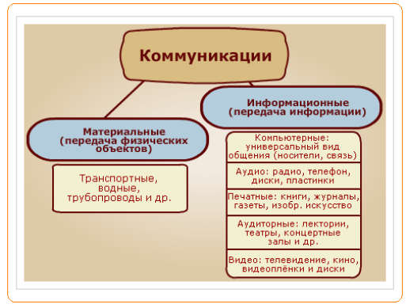
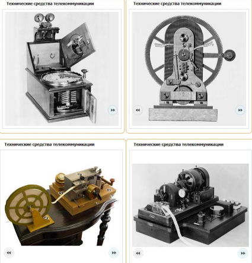
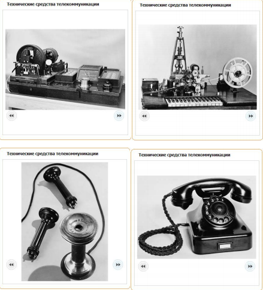
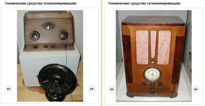
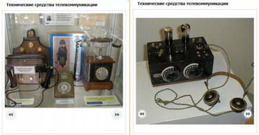
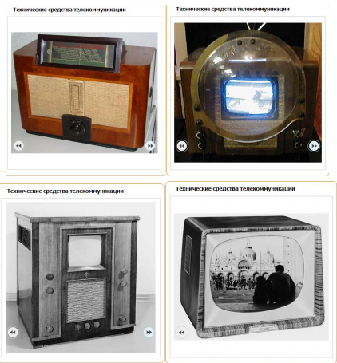

ЛЕКЦИЯ №23. (2часа)
ТЕМА: «ТЕЛЕКОММУНИКАЦИОННЫЕ ТЕХНОЛОГИИ»
Рассматриваемые вопросы лекции:
1.Понятие компьютерные сети и телекоммуникационные технологии.
2.Телекоммуникационные технологии, возможности ТКТ, способы и средства организации.
3.Место и роль телекоммуникационных технологий в информационных системах.
Литература: http://www.ido.rudn.ru/nfpk/inf/inf11.html
Ход лекции:
1.Понятие компьютерные сети и телекоммуникационные технологии.
В настоящее время персональные компьютеры в автономном режиме практически не используются, их, как правило, объединяют в вычислительные или компьютерные сети.
Компьютерная сеть – это совокупность компьютеров и телекоммуникационного оборудования, обеспечивающая информационный обмен компьютеров в сети. Основное назначение компьютерных сетей - обеспечение доступа к распределенным ресурсам.
Телекоммуникации (греч. tele - вдаль, далеко и лат. communicatio - общение) - это передача и прием любой информации (звука, изображения, данных, текста) на расстояние по различным электромагнитным системам (кабельным и оптоволоконным каналам, радиоканалам и другим проводным и беспроводным каналам связи).
Телекоммуникационная сеть - это система технических средств, посредством которой осуществляются телекоммуникации.
К телекоммуникационным сетям относятся:
2.Телекоммуникационные технологии, возможности ТКТ, способы и средства организации.
Начнём изучение второго вопроса с ряда определений.
Слово технология произошло от греческих слов τέχνη, что значит искусство, хитрость и λόγος — наука, учение.
Технология — это совокупность производственных методов и процессов в определённой отрасли производства, а также научное описание способов производства. Толковый словарь С.И. Ожегова и Н.Ю. Шведовой
Прежде всего, технология означает процесс преобразования чего-либо, направленный на достижение поставленной цели. В сфере материального производства, например, технология представляет собой процесс преобразования сырья и материалов с целью получения готового продукта, удовлетворяющего потребностям человека. При этом технология изменяет качество материала. Для информационных технологий характерной особенностью является то, что первоначальным «сырьём» и конечной «продукцией» в них является информация. Действительно, информация является одним из важнейших ресурсов общества, наряду с природными и материальными ресурсами, поэтому процессы преобразования информации можно назвать технологией, в основе которой лежит изменение качества информации. Информационная технология отличается от производственной технологии и тем, что в информационной технологии есть элементы интеллектуальной обработки информации. Из курса средней школы нам известно следующее определение. Информационные и коммуникационные технологии — это совокупность методов, устройств и производственных процессов, используемых обществом для сбора, хранения, обработки и распространения информации. Понятие «коммуникация» произошло от латинского слова communicatio — сообщение, передача, связь.
Коммуникация — процесс, путь и средства передачи объекта, информации с одного места на другое.

Информационные технологии находятся в постоянном развитии и совершенствовании и возникли они задолго до появления компьютеров. Термин «телекоммуникации» тоже не новый (от латинского tele — «вдаль», «далеко»), означавший некоторое время назад просто обмен информацией на расстоянии. В настоящее время определение выглядит по-другому.
Телекоммуникация — дальняя, дистанционная связь и дистанционная передача всех форм информации, включая данные, голос, видео и т.п., между компьютерами по линиям связи различных видов.
3.Место и роль телекоммуникационных технологий в информационных системах.
Сегодня понятие телекоммуникации стало ещё более широким. В этом легко убедиться, набрав слово «телекоммуникации» в любой поисковой программе. Скорее всего, вы увидите такие словосочетания, как «мобильные телекоммуникации», «в области телекоммуникаций, сетевого оборудования и средств связи», «выставка систем связи и средств телекоммуникаций, компьютеров и оргтехники», «менеджер по продажам услуг телекоммуникации» и т.п.
На разных этапах развития общества появлялись новые технические средства, разрабатывались новые методы организации данных, их передачи, хранения, обработки. Вот примеры распространённых в разное время технических средств коммуникации (или телекоммуникации): телеграф, телекс, телефон, факсимильный аппарат, телетайп, радиоприёмник и передатчик.





Во второй половине прошлого века появились так называемые новые информационные технологии, переход к которым стал возможен только благодаря появлению новых средств — массовому использованию вычислительной техники, компьютерных сетей, спутников связи и пр. Относительно недавно появилось новое понятие — «телематика». Название дисциплины произошло из частей слов "телекоммуникации" и "информатика", она изучает системы объединения средств информатики и телекоммуникации.
Телематика — новая научно-техническая дисциплина, предметом которой являются методы и средства передачи информации на расстояния, существенно превышающие линейные размеры площади, занимаемой участниками связи.
Телематика — это ещё и название безбумажной технологии, исключающей использование носителей информации на промежуточной стадии её обработки. Итак, современные телекоммуникационные технологии основаны на использовании информационных сетей. Эти технологии характеризуются не только применением компьютеров, но и активным вовлечением в информационный процесс конечных пользователей-непрофессионалов, возможностью для рядового пользователя доступа к общим ресурсам компьютерных сетей. В зависимости от назначения сети в понятие ресурс можно вкладывать различный смысл.
Сетевые ресурсы бывают трёх типов:
1. аппаратные;
2. информационные;
3. программные.
Когда в компьютерном классе в школе ученики пользуются одним принтером или хранят свои результаты работы на жёстком диске одного, например, учительского, компьютера, выполняющего роль сервера, то они разделяют один общий аппаратный ресурс. Можно использовать папки и содержащиеся в них файлы — так мы используем информационный ресурс. Компьютерные сети позволяют совместно использовать и программные ресурсы.
Телекоммуникационная вычислительная сеть — это сеть обмена и распределенной обработки информации; средства передачи и обработки информации ориентированы в ней на коллективное использование общесетевых ресурсов — аппаратных, информационных, программных.
С появлением телекоммуникационных сетей удалось разрешить две очень важные проблемы:
1. обеспечение в принципе неограниченного доступа к ресурсам сети пользователей независимо от их территориального расположения;
2. возможность оперативного перемещения больших массивов информации на любые расстояния, позволяющая своевременно получать данные для принятия тех или иных решений.
Для телекоммуникационных сетей принципиальное значение имеют следующие обстоятельства: